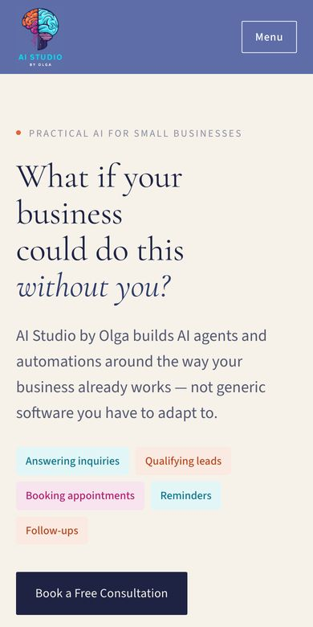

I know where automations break.
QA taught me that "it works on my screen" isn't good enough. I look for the wrong date, the missing reply and the odd question before your customers find them.
Building practical AI agents for salons, studios, real estate offices and local businesses
Nine years of QA automation behind every one of them
I spent nine years as a QA automation engineer, finding the places where software quietly breaks. Now I build AI agents and automations for small businesses, and I test every one against real scenarios before a single client message reaches it.
See my workQA taught me that "it works on my screen" isn't good enough. I look for the wrong date, the missing reply and the odd question before your customers find them.
We start with your real day: where messages arrive, where time slips away and which tools you already use. Then I automate only the repeats worth automating.
Every project gets a test report against the agreed requirements, the integrations and the edge cases. You see it before anything goes live.
Each one started with a real problem: enquiries slipping through, replies taking too long, or a business owner doing the same task every evening.
[ Selected work ]
My own studio: a three-language website (English, Russian, Ukrainian) and an iOS and Android app. Visitors book a free consultation or send a message; every lead lands in a database, my inbox and my phone, with a private admin side for clients and projects.


Never lose an enquiry again. Every college enquiry lands in one queue and goes to one counsellor within seconds, with a first reply drafted from the programme table and reminders that stop the moment the student replies. Built around six rules that must never break, and checked with automated end-to-end tests.

My first client project for AI Studio: a website for an established Tampa Bay realtor known in the Russian-speaking community for being available, responsive and genuinely invested in her clients. The site is built to carry that personal reputation online.

A prototype assistant for real estate offices that answers new enquiries, asks the qualifying questions an agent would ask, and hands over a ready lead with budget, area and timing. Includes the full conversation script and a comparison with tools already on the market.
Hi, I'm looking for a 2-bed near the water.
Happy to help. What budget range should I search, and when would you like to move?
Up to 450k, by spring.
Lead ready: 2-bed, waterfront, up to $450k, spring
An illustrative conversation based on the prototype script
[ Also built ]

I'm Olga. For nine years I worked as a QA automation engineer, the person whose job is to break software before customers do. That habit is the reason I started AI Studio by Olga.
Small businesses don't need hype about AI. They need an assistant that answers the 9 p.m. message correctly, books the right slot and never sends a reminder on the wrong day. So I listen first, build around the tools you already use, and test everything before launch.
I speak English, Russian and Ukrainian, and so can the assistants I build. You talk to one person from the first conversation to launch.
[ Contact ]
I'll suggest where to start, and what it would cost. The first conversation is free.